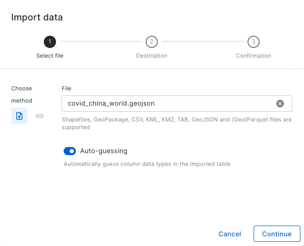
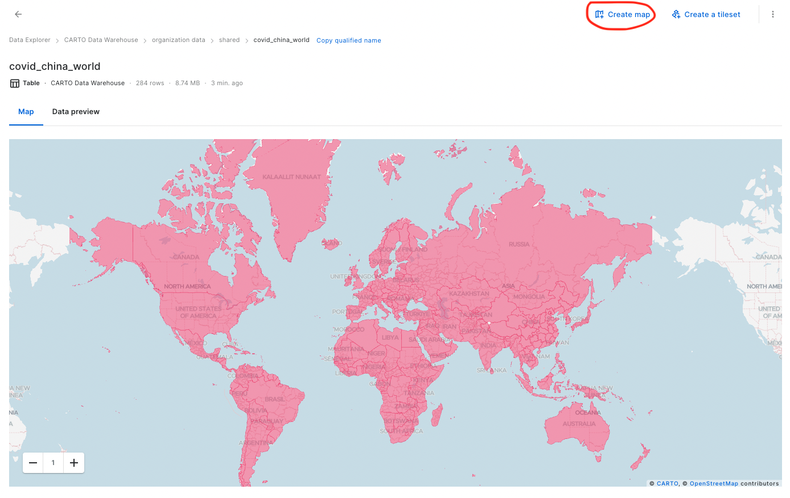

8 Dashboards
Dani Arribas-Bel
Lecture: Dashboards: bringing analysis to the web
Lab: Building Dashboards
8.1 Lecture
Slides can be downloaded here
8.2 Lab
To complete this lab, you will require the following:
- The internet
- An active CARTO account
8.2.1 Dashboard roundup
One of the best ways to learn anything is by examining how others before us have tackled similar problems. That’s exactly what we will do in this first section of the lab. We will spend some time studying dashboards other people have built to track its spread and incidence. When looking at them and playing around, remember everything we discussed in the Lecture about how to design good dashboards.
Here’s what we’ll do:
Have a look at the list provided on Teams (and below) and pick one, and only one, dashboard.
COVID-19 DASHBOARD
OTHER DASHBOARDS
- Population Density by Our World in Data
- Population Density by Dr. Duncan Smith
- The Refugee Project
- Global Data Hub on Human Trafficking
Once you know which one you will do, add your name to “claim” it. Up to ten students can look at the same link. Spend 15 to 20 minutes exploring the dashboard and, based on the principles discussed in class, try to come up with:
- Three most effective aspects of its design
- Three areas where an improvement would make the biggest difference
- Ideally, suggest how you would improve those from 2.
Type up your thoughts into a single entry on the “Lab 9” channel of the module’s Team. You can use the following template:
Maker: who’s responsible for the dashboardURL: link to access itContent: what is displayed on the dashboardBest three aspectsThree areas to improveThree suggestions for improvement
8.2.2 Build a Dashboard in Carto
For this exercise, team up in groups of two or three students and download the COVID dataset, which you can upload to CARTO. Click on import data:

Currently, the import of CSV, GeoJSON, GeoPackage, KML, KMZ, TAB and Shapefiles (in a zip package) with at least two columns is supported. The size limit for a single import process is 1 GB.
Once the data is in the ‘shared data’ option, create a new map.

Spend around 45 minutes trying to create a dashboard that is effective at communicating the COVID-19 dataset. You should focus on the widgets section, there are multiple options to explore:
Formula
Category
Histogram
Range
Table
You can also explore the interaction, legend and base map options. As discussed in the lecture, start by thinking exactly what you want to communicate, and build from there. The raw data can also be accessed here.
Presentation
Share your dashboard on Teams. You will then have 30 seconds to present your dashboard and hit the following points:
What the dashboard shows
What interactivity/analysis element(s) you have used
One thing you think is really effective about it
Remember, 30 seconds. Short and sweet. Make them count!
8.3 References
The lecture notes draw heavily on Stephen Few’s “Information Dashboard Design” book.
Kitchin, R., Lauriault, T. P., & McArdle, G. (2015). Knowing and governing cities through urban indicators, city benchmarking and real-time dashboards Regional Studies, Regional Science, 2(1), 6-28.